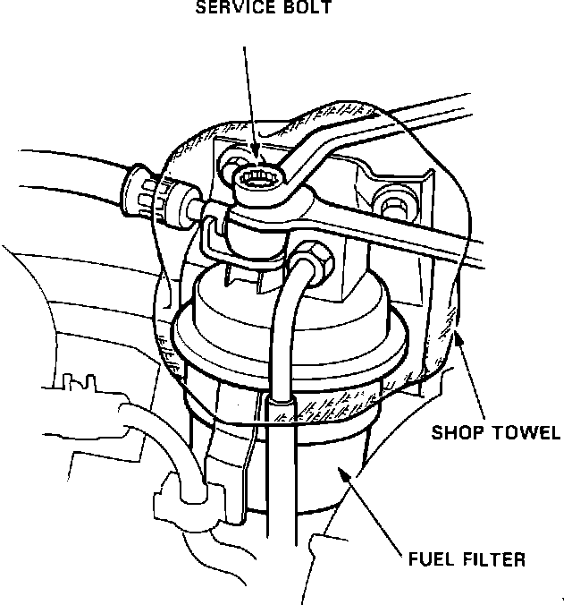

Fuel Filter: Description and Operation
Fuel Filter:

The fuel filter traps contaminants before they reach the fuel injectors. It is located on the right side of the firewall. The filter is a paper element replaceable inline type. A service bolt is located at the top of the filter to relieve fuel pressure before servicing.